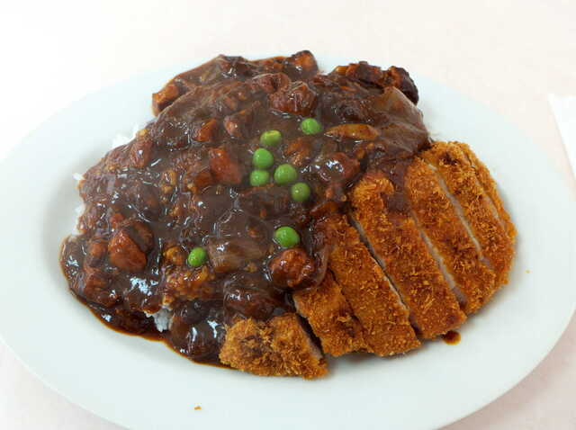

昭和から沼津で愛され続ける老舗洋食。藤井聡太も勝負メシに選んだ名物「カツハヤシ」を、昔ながらの一皿で。
沼津・下本町で長く暖簾を守る洋食店。世代を超えて通うファンの味。
デミグラスとカツの黄金コンビ。藤井聡太の勝負メシ。
オムハヤシ、カツ丼、とんかつ。丁寧に、変わらぬ味で。

白米の上に、サクッと揚げたカツと、じっくり煮込んだデミグラス。甘みとコクが重なる、千楽を代表する一皿です。テレビや将棋界でも話題に。
お昼時は混み合います。お電話でのご予約がおすすめです。